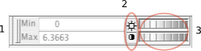

Contents
Bricon Toolbar
 The "Min" & "Max" fields(1) display the minimum & maximum value of the display range. Unless the image is at the bottom of the Image List, any voxels with intensity below the minimum set here will not appear, i.e., the image is effectively threshold at "Min" and these voxels will be rendered transparent. Note that this is only the case when continous colormaps are in use. Label colour maps do not change display with the brightness and contrast settings at all.
The reset button(2) reverts brightness and contrast to original values.
Finally there are a pair of wheel controls(3) to control brightness (top) and contrast (bottom) in an interactively.